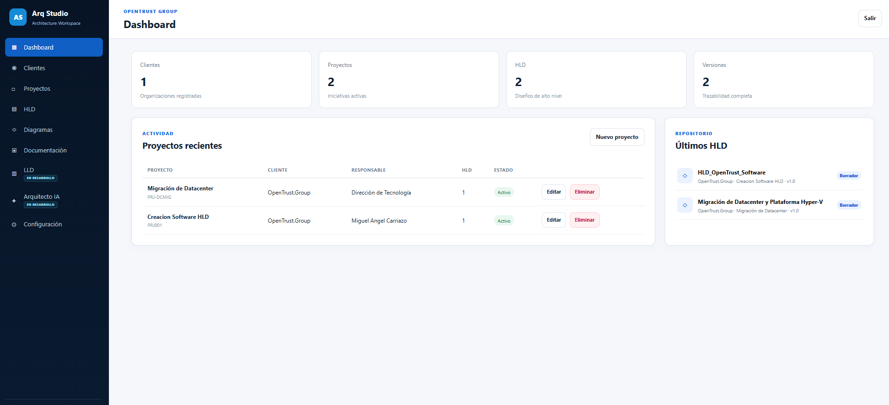

Workspace multi-cliente
Organiza clientes, proyectos y HLD con responsables, estados, versiones y separación clara de contextos.
Diseño y documentación profesional de arquitecturas de soluciones.
Arq Studio transforma la elaboración de un HLD en un proceso guiado, trazable, versionado y gobernado. Clientes, proyectos, decisiones, requisitos, inventario, relaciones, diagramas e informe comparten un mismo modelo estructurado.
He creado Arq Studio desde la experiencia real de preparar, revisar, defender y mantener diseños de arquitectura. No parte de una plantilla genérica: parte de los problemas cotidianos del arquitecto de soluciones, de infraestructura y cloud.

Arq Studio no es únicamente un editor de diagramas. El wizard captura la información, el modelo semántico la estructura, los diagramas la representan, el informe la documenta y la gobernanza controla sus versiones y aprobaciones.
Organiza clientes, proyectos y HLD con responsables, estados, versiones y separación clara de contextos.
Recoge información general, alcance, actores, contenedores, vistas, requisitos, seguridad, riesgos y trabajos.
Elementos y relaciones mantienen identificadores estables y actúan como fuente de verdad.
Genera C4 System Context, C4 Containers, vista lógica y vista física en SVG y XML draw.io.
Versionado, estados, revisión, aprobación, baseline y protección de versiones aprobadas.
Centraliza documentos, diagramas, adjuntos, evidencias, exportaciones y backups.
Las siguientes pantallas son capturas reales del producto y muestran funcionalidades implementadas, módulos en desarrollo y el flujo completo de trabajo.
Presenta clientes, proyectos, HLD, versiones y actividad reciente para ofrecer una lectura inmediata del portfolio de arquitectura.
El dashboard permite priorizar iniciativas y detectar diseños que requieren atención. Las métricas deben ser una puerta de entrada al detalle, no un sustituto de la revisión arquitectónica.
Los indicadores deben derivarse de clientes, proyectos, HLD y versiones persistidos. Es importante evitar cálculos duplicados entre dashboard, listados y workspace.
Cada organización funciona como nivel superior de gobierno y agrupa sus proyectos, HLD, responsables y entregables.
La separación por cliente ayuda a delimitar alcance, propiedad y contexto. Las eliminaciones deben ser explícitas y conservar trazabilidad.
La integridad cliente → proyecto → HLD debe protegerse en backend, incluyendo validaciones de eliminación en cascada y referencias activas.
Los proyectos se asocian a un cliente y muestran responsable, número de HLD, estado y fecha de actualización.
El arquitecto necesita comprender el propósito del proyecto antes de entrar en el diseño. El portfolio debe mostrar contexto, alcance y responsables.
Los filtros deben mantener el contexto del cliente y los identificadores deben permanecer estables durante todo el ciclo de vida.
Centraliza los documentos de arquitectura con cliente, proyecto, versión, estado y acciones disponibles.
El catálogo debe diferenciar claramente borrador, revisión, aprobado y obsoleto. Una baseline aprobada no debe modificarse directamente.
Cada versión debe ser inmutable cuando se aprueba. Los cambios posteriores deberían generar una nueva versión enlazada a la anterior.
Muestra el avance del wizard, la preparación documental y el estado de las principales vistas de arquitectura.
La completitud ayuda a revisar calidad y preparación, pero no equivale a aprobación. Un diseño puede estar completo y seguir necesitando correcciones.
Las reglas de completitud deben ser explícitas, versionadas y calculadas a partir de campos, relaciones y artefactos realmente existentes.
Permite consultar el estado documental y preparar la evolución controlada de una versión del HLD.
El cambio de estado debe estar ligado a criterios de revisión y aprobación, no ser únicamente una etiqueta visual.
La transición entre estados debe registrar usuario, fecha, motivo y versión origen. Las versiones aprobadas deben quedar bloqueadas.
Recoge metadatos, propiedad, revisión, aprobación, control de cambios y resumen ejecutivo del documento.
Esta información define quién responde por el diseño y quién debe revisarlo o aprobarlo. Debe quedar ligada a una versión concreta.
Conviene registrar autor, revisores, aprobador, fecha, estado y huella del artefacto generado.
Modela aplicaciones, servicios, APIs, bases de datos, plataformas, almacenamiento y sus relaciones.
Los contenedores deben representar responsabilidades reales y no convertirse en una simple lista de productos.
Los elementos y relaciones necesitan identificadores estables, tipos consistentes y validaciones contra referencias huérfanas.
Documenta capacidades, dominios, responsabilidades, flujos y elementos lógicos como parte del modelo semántico.
La vista lógica debe explicar qué hace la solución y cómo se organiza, evitando mezclar capacidades con componentes físicos.
Es importante detectar duplicidades, relaciones rotas e inconsistencias semánticas antes de proyectar diagramas.
Se genera automáticamente a partir del modelo y representa actores, sistema en estudio, sistemas externos y relaciones principales.
Esta vista ayuda a validar límites, dependencias y responsables antes de profundizar en contenedores o infraestructura.
La generación automática debe producir un SVG y un XML draw.io coherentes, conservando IDs, relaciones, etiquetas y sentido de los flujos.
Los diagramas pueden abrirse en diagrams.net para ajustar nodos, rutas, etiquetas y composición visual.
La edición manual permite aplicar criterio profesional sin perder la base estructurada del modelo.
El sistema debe conservar el XML, exportar el SVG actualizado, marcar el diagrama como editado manualmente y protegerlo de regeneraciones accidentales.
Se genera automáticamente desde el modelo semántico y proyecta aplicaciones, servicios, APIs, bases de datos, almacenamiento e integraciones.
Esta vista debe mostrar responsabilidades y dependencias relevantes, no únicamente conexiones técnicas.
La generación automática debe ser determinista: el mismo modelo debe producir el mismo diagrama y conservar la identidad de cada arista.
Se genera automáticamente desde el modelo y representa capas, dominios, módulos y dependencias funcionales de forma comprensible para arquitectura y equipos técnicos.
La vista lógica debe ayudar a revisar cohesión, acoplamiento y límites funcionales.
La generación automática debe permitir trazar cada elemento hasta su definición en el wizard y hasta las relaciones del modelo.
Se genera automáticamente desde el inventario y el modelo, mostrando zonas, infraestructura, plataformas, nodos y relaciones físicas principales.
El HLD debe conservar el nivel de detalle adecuado. Puertos, VLAN, direccionamiento y cableado pertenecen al futuro LLD.
La generación automática de la vista debe derivarse del inventario y permitir identificar nodos sin propietario, entorno o función.
El informe profesional se compone desde los datos, tablas, decisiones, requisitos, diagramas y gobernanza registrados.
El documento final debe reflejar exactamente el alcance aprobado y las limitaciones conocidas.
La generación debe ejecutarse sobre una versión congelada para evitar que cambios posteriores alteren un informe emitido.
Centraliza estado, completitud, validaciones, aprobación, observaciones y preparación de la baseline.
La gobernanza convierte el documento en un entregable controlado y revisable, no en un fichero aislado.
Las transiciones, aprobaciones y bloqueos deben quedar registradas con usuario, fecha, motivo y versión afectada.
Agrupa documentos, diagramas, adjuntos, evidencias, exportaciones y backups asociados a cada versión.
El repositorio debe permitir reconstruir qué entregables formaban parte de una baseline aprobada.
Cada archivo debería mantener categoría, origen, estado, tamaño, fecha e integridad, además de permisos coherentes con la versión.
Reúne las vistas disponibles y permite consultar su estado, origen y protección frente a regeneraciones.
El arquitecto necesita distinguir qué diagrama procede del modelo y cuál ha sido ajustado manualmente.
La aplicación debe mantener sincronizados SVG, XML draw.io, estado de edición y backup previo a cada regeneración.
Evolución prevista para detallar redes, VLAN, direccionamiento, puertos, servidores, almacenamiento, secuencias de implantación y pruebas.
El LLD debe derivarse de un HLD aprobado y mantener trazabilidad con sus decisiones y requisitos.
Estas capacidades todavía no están operativas y deben mostrarse claramente como módulo en desarrollo.
Módulo previsto para analizar coherencia, detectar inconsistencias, revisar requisitos, identificar riesgos y proponer mejoras.
La IA debe asistir al arquitecto, no aprobar diseños ni sustituir el criterio profesional.
Toda propuesta requerirá validación humana y no podrá modificar baselines ni sobrescribir diagramas manuales de forma automática.
Documento de demostración de 23 páginas generado desde Arq Studio. Incluye portada, metadatos, control documental, alcance, actores, contenedores, vista lógica, requisitos, vista física, seguridad, decisiones, riesgos, diagramas, gobernanza y repositorio.
La información, las relaciones, los diagramas y el informe nacen del mismo modelo estructurado.
C4 System Context, C4 Containers, vista lógica y vista física se generan automáticamente desde el modelo.
Versiones, revisión, aprobación, baseline, repositorio e integridad dentro de un mismo ciclo de vida.
El informe debe permitir defender el diseño ante arquitectura, infraestructura, redes, seguridad, operaciones y negocio. La calidad final depende de la coherencia del modelo y de las decisiones documentadas.
La generación debe trabajar sobre una versión congelada, conservar referencias a elementos y relaciones y evitar que cambios posteriores modifiquen un documento ya emitido.